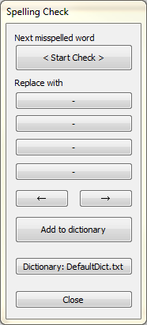
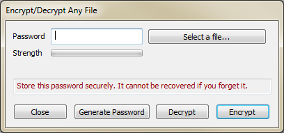
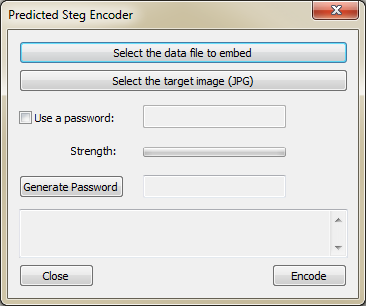
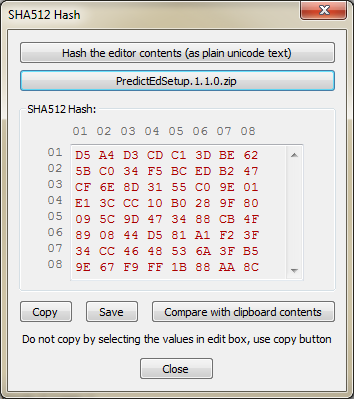

Contents
IntroductionInstalltion
System Requirements
Usage
Contexts
Spelling and Dictionaries
Training
Encryption
Settings
Help and Updates
Known Issues
Introduction
PredictEd, is a free and open source predictive text editor application, for Microsoft windows.
It suggests words for auto completion as you start typing. It suggests the next probable words when you finish typing a word, and when you press the space bar, or when you auto complete the word, and press space bar.
Press the tab key to select a predicted word.
It presents five such words and three phrases below your cursor. Pressing the tab key again selects the next word or phrase in the list.
PredictEd learns, as you type in real time, and creates a knowledge base unique to your style of writing, and your subject matter. You get the most relevant suggestions as it builds up its knowledge from the words and phrases you type. Gradually it becomes your personal typing assistant.
You can also feed it your own writings in the form of text files, and instantly get the same result. PredictEd keeps learning anyway, and builds up the knowledge, as you work.
PredictEd can save the entire knowledge in a specific context, subject or language, and can load it back. This gives you the most suitable suggestions while typing. You can have as many contexts as you wish, each with its own unique and independent database.
It also has some more smart features like formatting as you type. So that you have a basic formatted document as soon as you finish typing. It also capitalizes the words, inserts spaces after periods and inserts paragraph breaks after new lines. It saves the file after each paragraph automatically. It can save the text as a rich text file with formatting, or as a plain text file. And it can open those formats.
PredictEd has the usual text editing features such as cut, copy, paste, setting fonts and text sizes, undo and redo, and find and replace functions, and spelling checks. You can also set a default font, text size and text colour, and background colour.
It supports Unicode text, which means it will work for most of the languages. It learns in a similar way independently of the language and script being used.
PredictEd is supported on Microsoft Windows 7 to 10.
To get you quickly started, the installation comes with several built in word lists (knowledge maps), generated using freely available text and books. So it will immediately show suggestions, but it is highly recommended to train it using your own writings, so that you get most relevant suggestions. Anyhow it will learn as you type.
This tool helps to speed up typing and ease the stress on fingers, especially for those with repetitive stress injury, or carpel tunnel. Initially it will appear as if you have slowed down because now you need to check the suggestions or predictions and decide whether to continue typing or press TAB. But gradually it becomes your habit and the typing will speed up. Takes a bit of practice and getting used to predictive typing.
The source code of this application is available for anyone to improve, fork, contribute or for use in your own application, without any restrictions.
Installation
Download the Windows Installer from: GitHub
Unzip the downloaded file and run setup.exe.
Follow the instructions. Run the program from start menu or by double clicking PredictEd desktop icon.
Please read the License before installing and using this software.
System Requirements
Minimum requirements:
Microsoft Windows 7 to 10
Dual core CPU
2 GB RAM
20 MB of free space on hard disk
A monitor with at least 800 x 600 resolution.
Usage
Autocompletion and Word Prediction.
Start typing. As you type the suggestions appear below your cursor. Press TAB key to select a suggestion. Pressing the TAB key repeatedly selects others suggestions from the list of suggestions.
When you complete a word and press Space Bar, the list of suggestions changes into a list of predictions. Press TAB to select a predicted word. Pressing the TAB repeatedly selects more words.
You can either use the suggestions or predictions or continue typing as usual.
Phrases
Three of the suggestions are multiple words or phrases. They are on a darker grey background. Press TAB key repeatedly to select the phrases.
Saving
Click the Save or Save As buttons on the left or commands from the File menu.
The text can be saved in the RTF (Rich Text Format) or Plain text format.
Note: Plain text is always saved as Unicode UTF-8
Auto Save
Every time you press enter key, the text is automatically saved. So in case of loss of data you can recover your work.
The backup file is located at (My) Documents/Oormi Creations/PredictEd 1.x.x/Documents/PredictEd_AutoBackup.rtf
Open File
Click the File Open button or command from the File menu to open a file.
RTF (Rich Text Format) or Plain text format files can be opened.
Note: The maximum size of text that can be loaded into the Rich Edit Control (Text Window) is 2 MB by default. You can change it in Settings. See below.
Editing
PredictEd supports the usual editing functions like cut (Control X) copy (Control C), paste (Control V), undo (Control Z) and redo (Control Y).
You can also use the Edit menu commands or the Copy and Paste buttons on the left.
Note: When no text is selected and Copy button is clicked, whole of the text is copied into the clipboard.
You can find words or replace words from the menu command Edit > Find and Replace. A window is shown in which you can enter the text to find or replace.

Formatting
Select the text and click the Format button on the left. A formatting window is shown where you can specify the font, size, colour etc.

Format as you type
Surround the text with formatting pair characters to format the text while you type.
Type: **Bold text** , Result: Bold text
Type: //Italic text// , Result: Italic text
Type: __Underlined text__ , Result: Underlined text
Clear Formatting
Select the text and click the Clear Format button. The text is reset to the default style, font and size.
Typing Duration
A clock is shown at the bottom of the text editor box which shows the duration of your session.
This is a useful reminder for those with painful joints or RSI to stop typing after some time and take a break, stretch etc.
This will reset to 0 when you start a new file or open a file.
Contexts
A Context is a set of databases related to a particular topic, such as a language or a subject.
As you use PredictEd, it gathers the words and saves relations between them in knowledge files. There are two such knowledge databases and one dictionary associated with the language being used. This information is saved as a Context in the form of a file.
A Context is useful when you are writing on a particular subject or in a particular language, as you get word suggestions and autocompletion suggestions based on exactly that context. For example, if you are writing on the subject of biology, you would prefer words related to that subject, not related to say, business or marketing. When you wish to write on the subject of business, you can simply switch to that context. Similarly, for languages.
So even though the databases sizes are limited due to speed and memory limits, you can have unlimited number of contexts, and hence unlimited knowledge data. Using the concept of contexts we can avoid huge databases and irrelevant suggestions. Switching to other languages is easy and dynamic. So you can have more than one language in the same document.
You can load a context from Menu > Contexts > Load Context. Now PredictEd shifts to the subject of this context and language and dictionary of it and begins providing suggestions and autocompletion based on context specific databases.
PredictEd provides several contexts as place holders with some data to get you started quickly. As you use these contexts the context specific data gets updated and the knowledge grows. You can create your own context from Menu > Contexts > Create Context.
You will get an option to either start from a blank database or copy the current database over to the new context. The currently loaded dictionary gets associated with this context.
You can change the current dictionary from Menu > Edit > Check Spelling. Whenever you change the dictionary, the context gets updated.
You can set which context to load at startup via Settings.
The current context name is displayed in the status bar below the text area.
It is recommended that the contexts and related files be backed up regularly so that you do not lose the data collected during months or years of using PredictEd. Anyhow you can always train it again from your own writings in case of data loss.
Spelling and Dictionaries
Click Menu > Edit > Spelling Check to check the document for spelling errors. You can specify a dictionary here. Note that some dictionaries have been provided with PredictEd but they are small. As you check spelling and add new words into the current dictionary, it grows in size.
You can specify your own dictionary, if you have one. The dictionary format used by PredictEd is very simple, just one word per line. However, the words are pre-sorted by the frequency of use. This makes the searches very fast. Its best to use sorted dictionary, but if you do not have one, an unsorted one will also work, perhaps it will be a bit slow.
Copy your dictionary into (My) Documents/Oormi Creations/PredictEd 1.x.x/Dictionary folder. The file must be plain text UTF-8.
Training
Before training ensure that you are in the correct context, as the knowledge files will get over written. (A backup is made anyhow before training.)
If needed create a new context, and select the option of starting from blank databases when prompted.
Click the Train button or the Train command from Options menu. The Training window appears.
Click the Add Files button to add some text files. You can use Control-Click or Shift-Click to select multiple files. You can click the Add button again to add more text files from other folders. You can add up to 20 text files for one training session.
Click the Start button to start the training. Depending upon the file size it can take some time. Close the window when "Finished training" message appears.
Note: Ensure that the files are plain text files, either ASCII or Unicode UTF-8
Note: Press the Close button to abort the training anytime. No new data will be saved.
Only Long term memory is updated during training. The file name is PredictEd_LTM.txt. The Short term memory is meant for real time learning. The location of data files is at:
(My) Documents/Oormi Creations/PredictEd 1.x.x/Contexts/YourContext
Note: You may see a message saying "List is full. Only relations and weights will be updated". This means that the list has reached a limit of 5000 entries. No new keywords are being added, but predictions and their weights are getting updated.
Currently this limit is hard-coded. You can set it to any other value if you compile from the source. Usually a longer list will consume more memory and will be slower.
It is highly recommended that you feed your own writing as training data. PredictEd will learn your style of writing, the words you often use and sentences you often write. This will help you to type even faster. You will get suggestions in the context of your writing.
It is language independent. Text files written in any language will work as long as they are in Unicode UTF-8 format.
You can feed it text files of different languages at once.
The original data will be backed up as soon as you start training. In case something goes wrong or you accidentally lose knowledge data, you can restore it by simply renaming the backup files. They are in the same folder as knowledge files.
Note: The knowledge data is in plain text CSV format. You can edit or delete the entries in it. Just ensure that you keep the structure intact, else PredictEd may crash or may suggest incorrect words.
Erase Knowledge data
You can erase the Long term memory by clicking the menu command Options > Erase LTM
This is recommended if you wish to train it from blank. Next training will store fresh data in LTM.
Your old LTM data will be backed up as usual.
Save Knowledge data
Usually the knowledge data is saved when you exit PredictEd. But you can also do it manually by click on the menu command Options > Save Knowledge
This saves both LTM and STM.
Merge LTM and STM
Usually when STM (The memory that stores real time learned data) is full (5000 entries), it is merged into LTM and is cleared. You can do this manually from the menu command Options > Merge STM into LTM
This enables learning of new words as you type.
Note: The number of entries in LTM and STM are shown at the bottom of the editor box. These counters appear when you start typing.
Encryption
PredictEd has built in tools to encrypt your files. Try Menu > Encryption.AES Encryption
This is a very strong encryption method with which you can encrypt your files. Any kind of files can be encrypted. You can also directly save the typed contents as encrypted files. You can directly load an encrypted file into the editor.

Note: There is a password generation utility in there.
Also note that there is no way to recover the password if it is forgotten or lost.
Warning: Some countries or corporations may not like it if you send receive encrypted content. This encryption function is directly based on Microsoft's Crypto CNG API and is only as reliable as that. With sufficiently powerful computer and a good motivation, it can be broken. You alone are responsible for using this tool. There are no security guarantees or any kind of guarantees here.
Base64 Encoding
This is not an encryption but an encoding method in order to transfer files over the internet. It is useful if you wish to upload executable files or email programs or scripts. Such files are usually blocked by email providers. Encoding them in Base64 and zipping them before uploading solves the problem.
Steganography
This is the famous way to hide data or messages inside images. PredictEd provides its own flavour of Steganography.
Any files can be embeded into any image. Provided the image is large enough to hold the data. You can optionally use a password protection, which XOR encrypts the data before embedding it into the image. The image does change a bit, but is not so obvious, especially if it is a big image.
You can hide any data into the image and transmit it via email or share online.

Note: Currently it accepts only JPG files as input images and the output is always a PNG file.
Try using a noisy image with lots of details. Images with smooth areas will turn into noisy images, which looks suspicious.
Warning: Always share the passwords for encrypted files via a separate channel. Do not attach them or mention them with the emails etc. Best way is to speak it via phone or in person.
SHA512 Hash
Its a 512 bit long string of bits which can be used as a signature of the data out of which it was generated. This number can be used to verify the integrity of your files and messages. If the hash of received file does not match with that of original file, the file was modified in some way. The hash can be communicated openly via email etc. An encrypted hash forms a digital signature.
The best use of SHA512 hash function is to verify the executable files or to detect presence of viruses or malware inside them.

Warning: Ensure that the original hash you received is from a trusted source. It is totally possible for someone to change the contents of the file and recalculate the hash with a claim that it is the original hash.